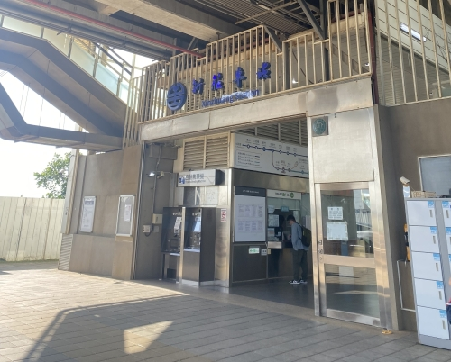

第一天 2025/07/16
第一天的早上我們就展開了搭火車環島之旅，先前往新莊車站搭上六家線的列車，我朋友則是從六家搭，因此我們直接在火車上會合，要前往我們的第一站新竹。 由於我們應該除了搭火車的時間外，需要長時間的步行，背包不能背太重，我最後帶了三套衣服出門(包含身上的那一件)，更別說帶行李箱了~ 另外我隨身還帶了一本筆記本蒐集車站印章用，出發前還隨手帶上了平板，雖然一開始蠻後悔的，因為也增加了一點重量，不過馬上就在我後面的旅程發揮很大的功用，敬請期待。

起始站:新莊車站!
抵達新竹車站後，我們就到附近走走買點東西，新竹車站也是乘載了我一些回憶，高中好多時間都在這附近補習，每個角落都還蠻熟悉的，忘記那時候有幹嘛了，但我們決定往海線走，前往海線五寶之一的談文車站。